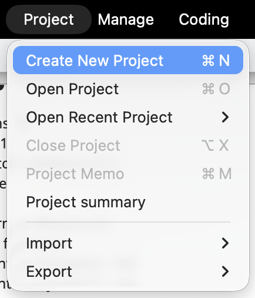
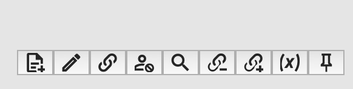
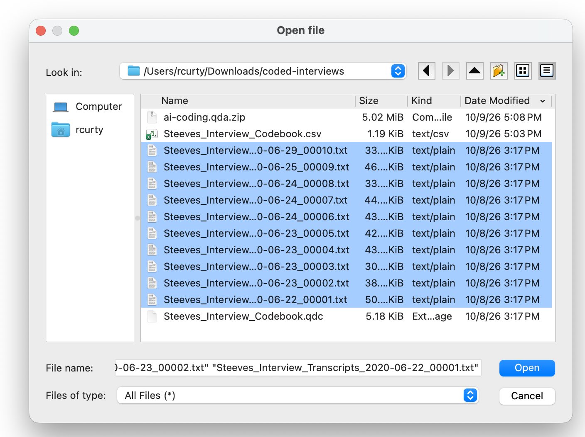
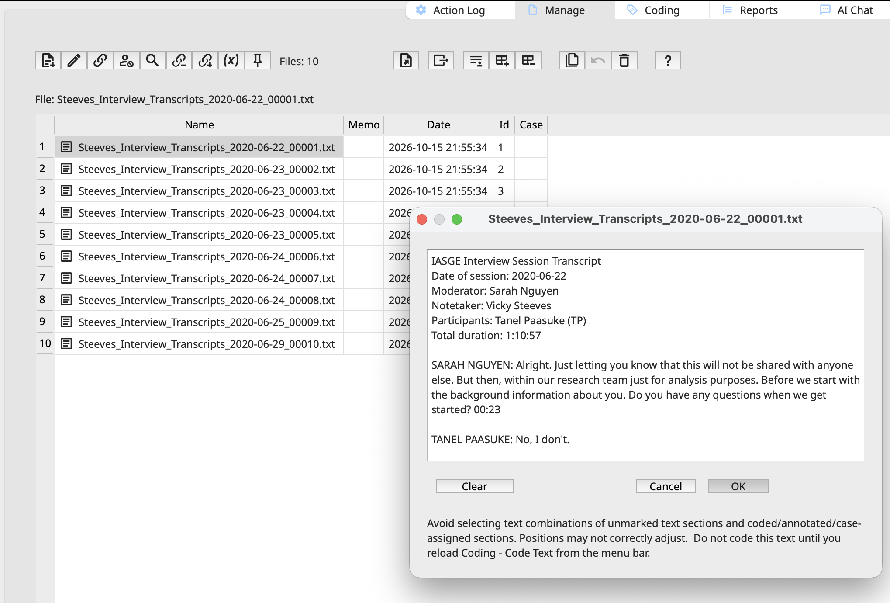
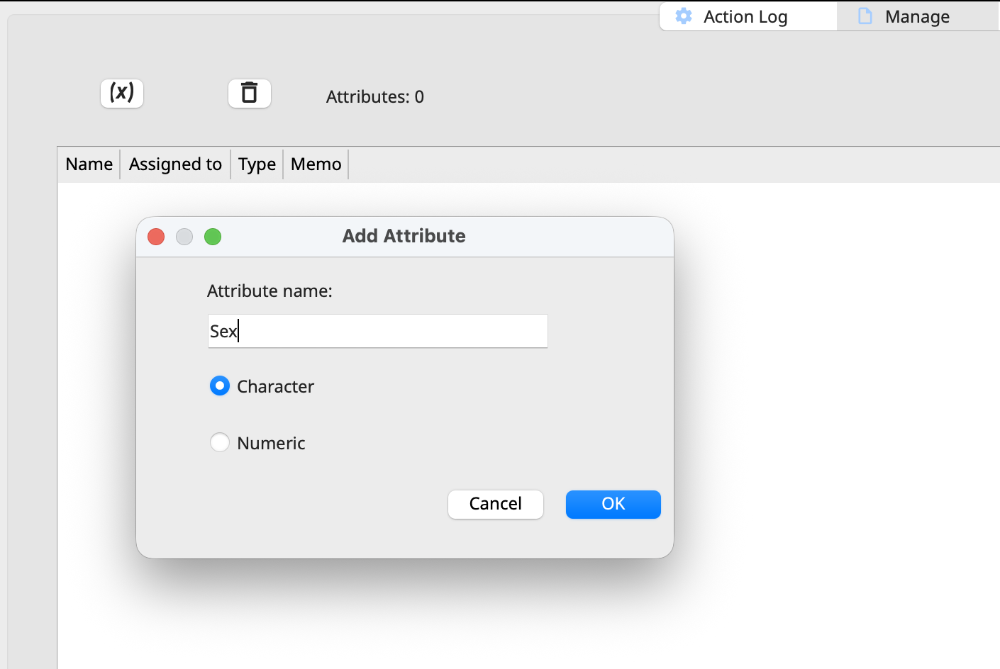
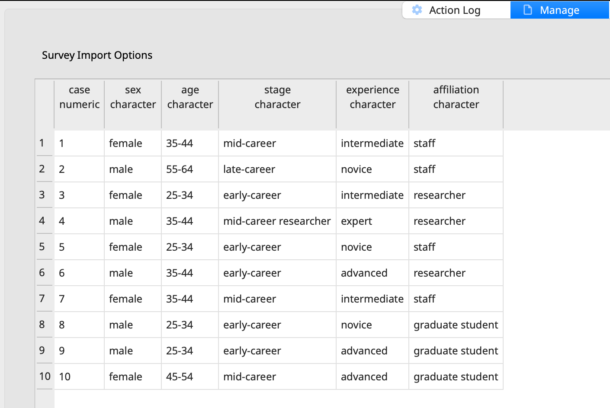
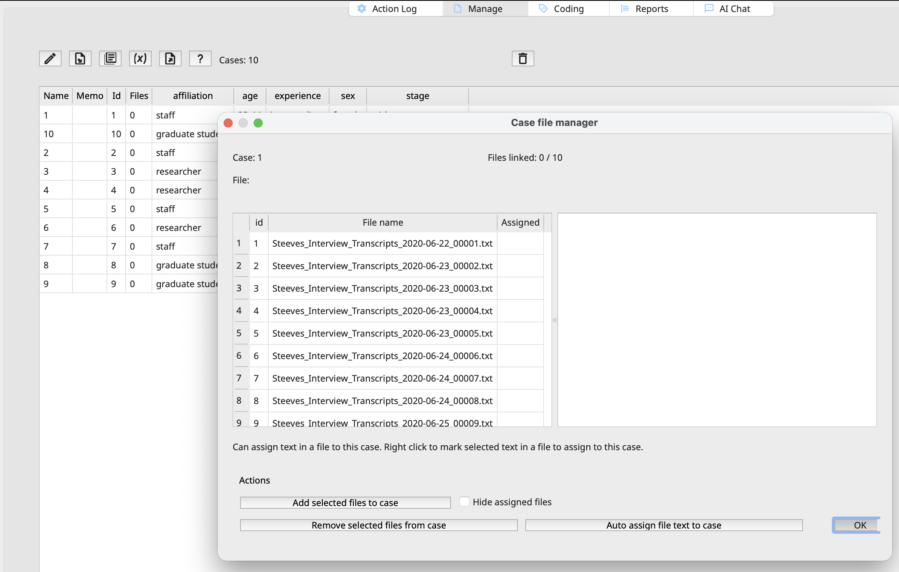
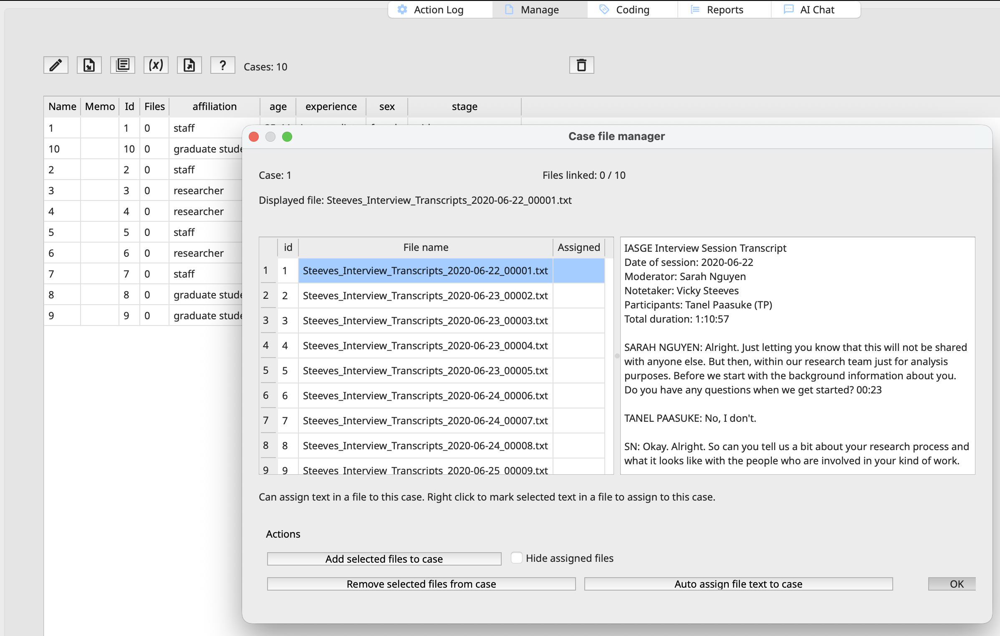
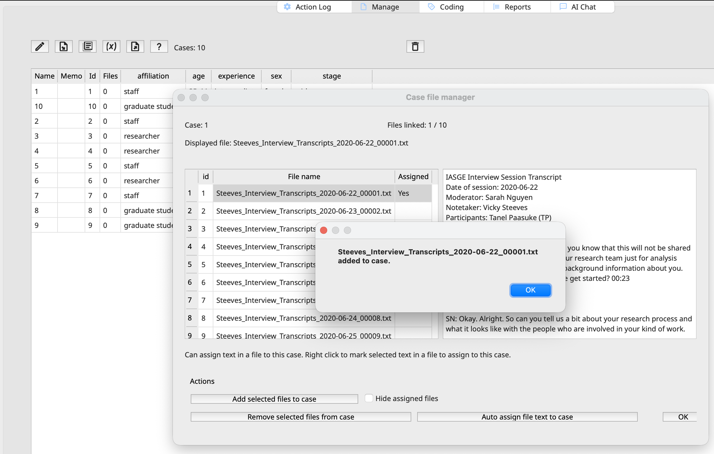

Setting Up Your Project
Creating a New Project
On the main window, before exploring QualCoder and its features, let’s create a new project. For this workshop, save the project to your Desktop so it’s easy to locate and access. Choose Project > Create New Project.

Then, let’s name it named git-experience. Note this will create a folder git-experience.qda in your desktop. If you open it you will notice that it contains a set of preset subfolders:

This is a QualCoder project folder. QualCoder saves each project as an ordinary folder whose name ends in .qda. Here’s what each item in it does:
git-experience.qda/ is the project itself. To open it, choose Project → Open in QualCoder and select this folder. If you move or back up the project, copy the whole folder. Taking only some of the files inside it will break the project.
data.qda is the most important file. It’s a SQLite database that holds all your analysis work: Your codes and code categories (the code tree). Every coded segment of text, image, audio and video. Cases, attributes, journals and memos. The plain text QualCoder pulls out of your imported documents (this is the text you actually code). Project settings and the list of imported files
project_in_use.lock is a temporary file. QualCoder creates it when the project is open, so the same project can’t be edited from two places at once. It’s normally removed when you close the project. If it’s still there and QualCoder isn’t running, the app probably crashed or was force-quit, and QualCoder may warn you the project is in use the next time you open it. In that case it’s safe to delete, as long as the project really isn’t open anywhere else.
ai_data/ holds data for QualCoder’s AI-assisted features (available in newer versions). It’s a local vector database of embeddings made from your documents, which powers AI search and AI-assisted coding. QualCoder can rebuild it from your documents. If it’s empty, you probably haven’t used the AI features yet.
documents/ stores copies of the text files you imported (.txt, .docx, .pdf, .odt and so on). Your coding is tied to the extracted text in data.qda, not to these files.
images/ stores imported images (.jpg, .png and so on) that you can code by region.
audio/ stores imported audio (.mp3, .wav, .m4a and so on). You can transcribe it and code it by time segment.
video/ stores imported video (.mp4, .mov and so on), which you can also transcribe and code by time segment.
Bringing in the data: Manage Files
With the project memo in place, let’s now import the interview files we will be coding.
All data in QualCoder comes in through Manage > Manage Files.
| Type | Accepted Formats |
|---|---|
| Text | .txt, .docx, .epub, .md, .odt, .pdf, .rtf, .tex |
| Images | .jpg, .jpeg, .png |
| Audio and video | .mp3, .m4a, .wav, .mp4, .mov, .ogg (and .wmv video) |
Click the first icon (the document with a plus sign). A window should open, allowing you to browse for and select the files you downloaded for this workshop. We will be uploading 10 interview transcripts that use aliases instead of participants’ real names to protect their identities.


The files should be displayed in our window, and double-clicking a file should open and display its contents.

QualCoder should not be used for editing, de-identifying, or pseudonymizing raw data. Best practice dictates importing only final, analysis-ready transcripts and notes into the platform for coding.
The memo field can be used to record any notes or annotations relevant to the file. For example, it may document the duration of an interview, its location or setting, the mode of data collection (e.g., in-person, telephone, or online), or its relationship to other files or data sources. More generally, the memo can capture contextual information, methodological notes, or other details that help document the file and support subsequent analysis. We won’t be using file memos in this workshop, but you may find them useful in your own projects for documenting additional information about your data and keeping track of details that may be relevant during analysis.
Note that that the time and date stamp reflect the import, not the file creation. IDs are sequentially assigned. But what are cases for?
Cases
Cases allow you to group data around a person, place, organization, or situation. In QualCoder, a case provides a way to bring together files and descriptive information associated with the same entity, making it easier to organize and compare data during analysis. You can also assign attributes to cases, such as a participant’s age group, gender, occupation, or other characteristics relevant to your research.
Do you need cases? Not always! If each participant has only one interview file, you can assign attributes directly to the file, without creating a separate case for each participant.
Cases become more useful when your data are more complex. For example, if you interview the same participant several times, you can use a single case to group their interview files and associate them with the same participant attributes. This allows you to examine what the participant said across different interviews without treating each interview as a separate person.
Cases can also be useful when a single file contains data from multiple participants, as in a focus group transcript. You can create a separate case for each participant and associate relevant segments of the transcript with the appropriate cases. This helps you distinguish participants’ contributions and compare their perspectives, even though their statements appear in the same file. Understanding how they work will be helpful as you begin working with larger or more complex datasets in your own projects.
For this workshop, even though we only have one file per case, we will proceed creating cases, but using a more streamlined approach combining it with attributes.
Attributes
QualCoder also offers the option to Manage > Manage Attributes.
File attributes describe a particular file, whereas case attributes describe the entity represented by the data. For example, an interview’s date and mode of collection are file-level characteristics, while the participant’s age group and occupation are typically case-level characteristics. The choice depends on your research design and what you want to compare during analysis.
File attributes describe individual files. For example, you could record the interview date, interview mode (in-person, telephone, or online), or participant’s age group and occupation for an interview transcript. These attributes are useful when you want to compare files based on their characteristics.
Case attributes describe the people, places, organizations, or situations represented in your data. For example, if you create a case for each participant, you could assign attributes such as age group, occupation, education level, or region. If a participant has several interview files, these attributes belong to the case rather than needing to be repeated for every file. You can then use the attributes to compare participants or explore patterns across groups.
Attributes will allow you to ask questions like “Do first-year students talk about stress differently from final-year students?”. It allows you to query and explore the data considering demographics and other important characteristics associated with the documents you are analyzing.
QualCoder is not a statistics package; for statistical analysis of attributes, we recommend to export them to a tool such as R.
Attributes can be added manually in the Manage Attributes, Manage Files, Manage Cases or Manage Journals sections by clicking on the (x) button, shown below.

However, there is an easier way to import them from a survey. QualCoder allows researchers to import csv or xls files with the description of cases and their associated attributes, and we have prepared it for you.
Select Manage > Import Survey, then choose the `cases-attributes.xls` file from the workshop folder.

If everything looks good, click OK. Now, let’s go to Manage > Cases. Note that the column files shows 0. Why? Because we have yet to link files to cases. Double-click the 0 value to prompt the case file manager window.

Now, we will assign files to cases. Select the corresponding file to match case numbers. We can assign by clicking on the file and choosing “Add selected files to case”.

Before confirming, please note that the file assignment now displays “YES.” You can also undo assignments or bulk-assign multiple documents within a selected range, though that won’t be relevant in this case. You might also click “Hide Assigned Files” to reduce the list and avoid confusion.
